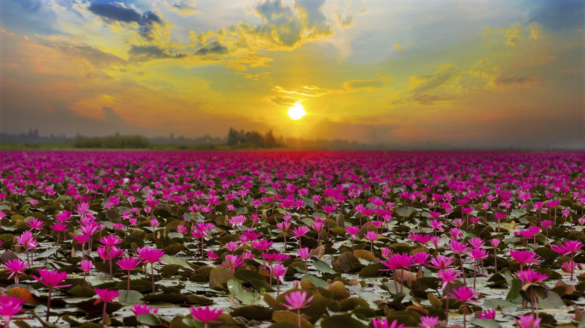

Malarikkal Lotus Garden
Malarikkal is a small tourism hamlet located in Thiruvarpu panchayat in Kottayam town of Kerala.It isn’t just the emerald of its backwaters that awaits you here, as Malarickal lures you in with breathtaking shades of pink as well. The water lilies (Nymphaea Stellata or ambal in local parlance) greet the terrain during the end of the monsoon rains, which usually occurs annually between September and October. A carpet of pleasant pink envelops the entire region in a breathtaking formation that is hard to explain with mere words. They spread out over 600 acres of land, and locals advise that the best time to witness this phenomenon is morning and evening. These visuals alone draw in bigger crowds each year, as words spread of this natural wonder.
To begin the day with the water lilies, and end it with a glorious sun setting over the countryside is nothing short of a divine endowment. The District Tourism Promotion Council (DTPC), Kottayam, will soon add village tourism options like boating and responsible tourism activities. These will undoubtedly further enhance the visitor experience at Malarickal.

Vagamon
Vagamon Pine Forest is a region with acres occupied by magnificent Pine trees thriving in the environment on steep slopes which is very unique to the region. Seldom crowded, the attraction is pollution free and can enliven one and all. It is, therefore, an apt place for long tranquil nature walks and photography. Situated 64kms from Kottayam, this enchanting hill station at an elevation of 1100 metres above sea level is a trekker's paradise. This enchanting hill station on the Idukki – Kottayam border dotted with tea gardens and meadows, will soon be one of India's foremost Eco tourism projects.
Illickal Kallu
One of the most popular tourist destinations in Kottayam district is Illickal Kallu, situated on a majestic hill called Illickal Mala.
There are numerous mountain streams in Illickal Mala, which is 6,000 ft above sea level, and they flow down to form the serene Meenachil River. Each of the three hills has a peculiar shape. One of them resembles a mushroom and hence, its name ‘Kuda Kallu’ (umbrella-shaped rock). The second hill has a small hunch on the side and is therefore called as ‘Koonu Kallu’ (hunchback rock). The third one is called Illickal Kallu as it derives its name from the mountain itself. The steep rock on the top of the hill has a part of its peak shorn off.
The journey up the hill is in itself an eventful one.. You may tread this path or just stay put and feel the might of this imposing muscular rock. The breathtaking aerial view of the surroundings and billows of mists that glide past shrouding the towering hill is sure to overwhelm you. The weather is cool and misty here. If the sky is clear, the Arabian Sea can be seen in the distant horizon as a thin blue line. Sunsets on full moon days are special here. The moon can be seen rising like another sun as the orange sun goes down.